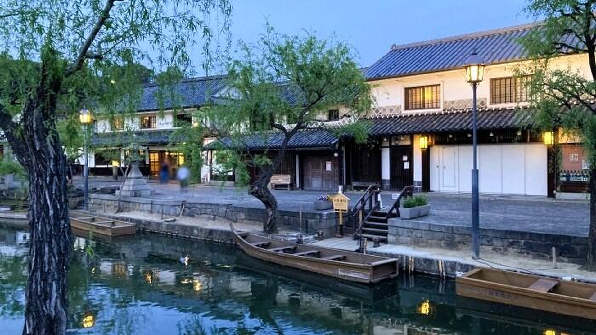
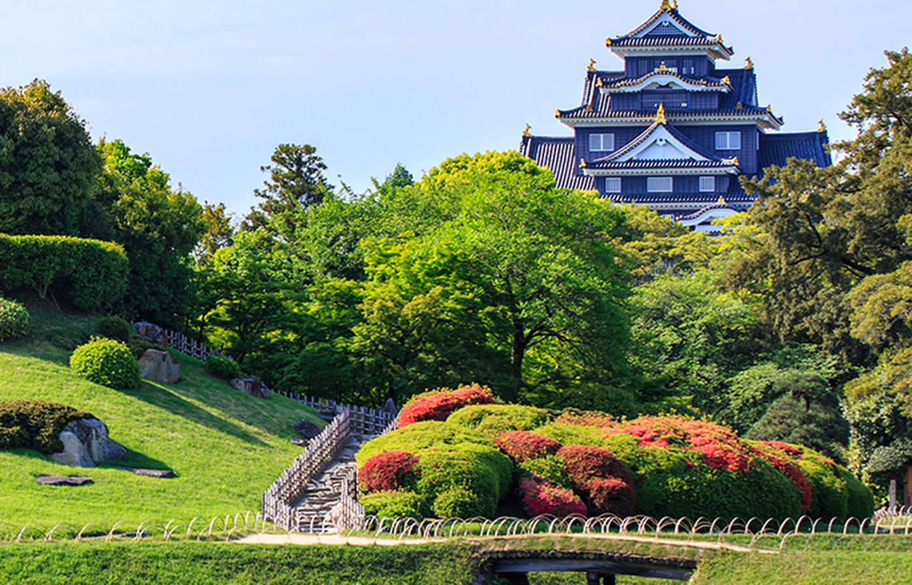
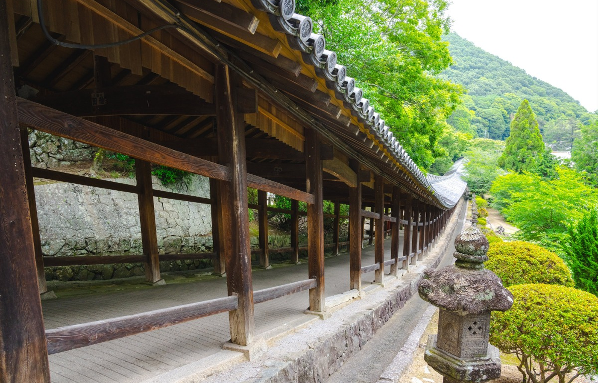
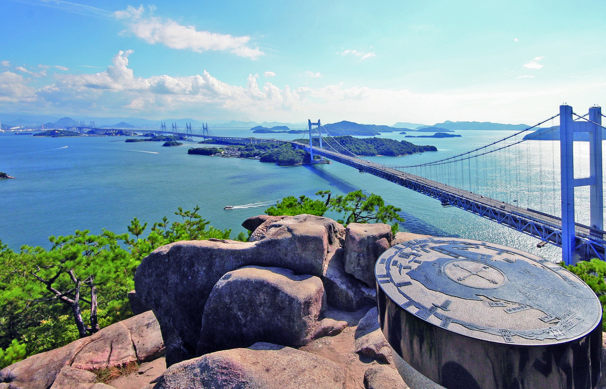
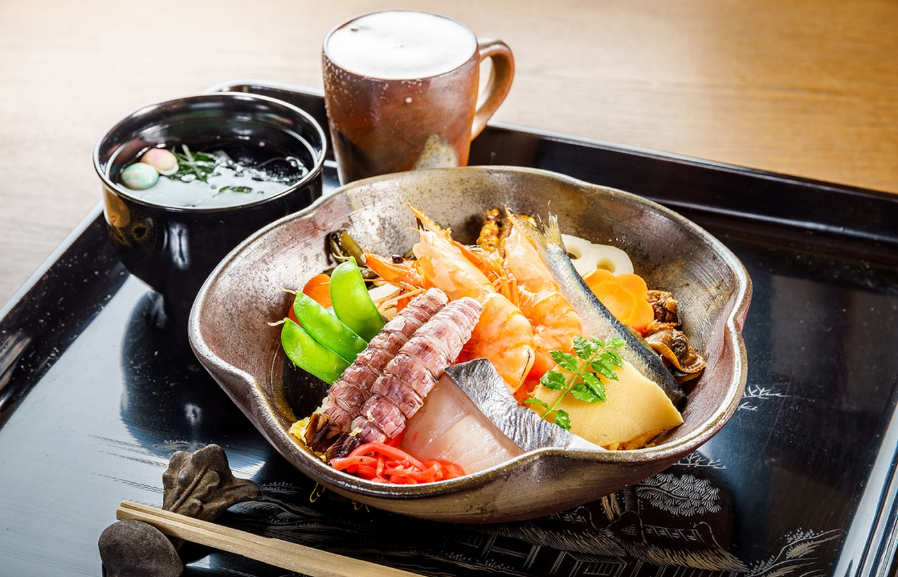
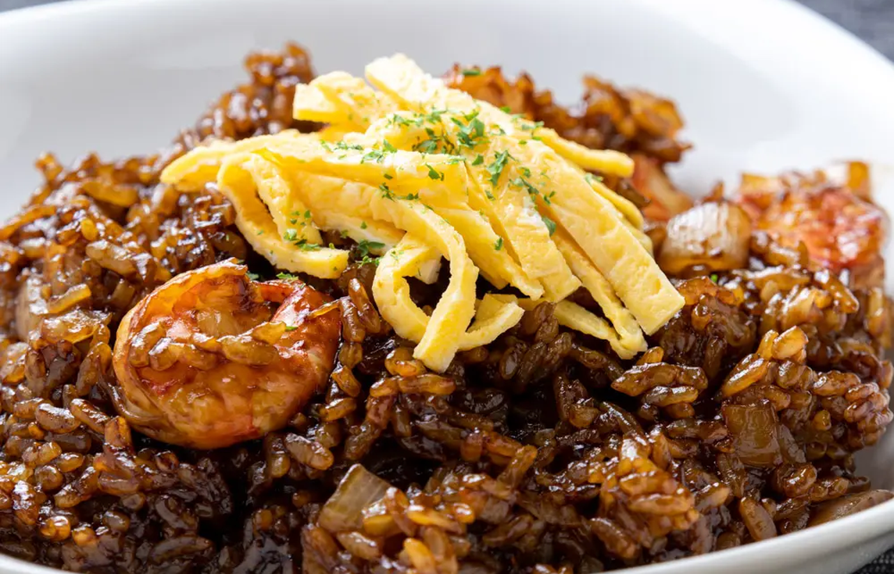
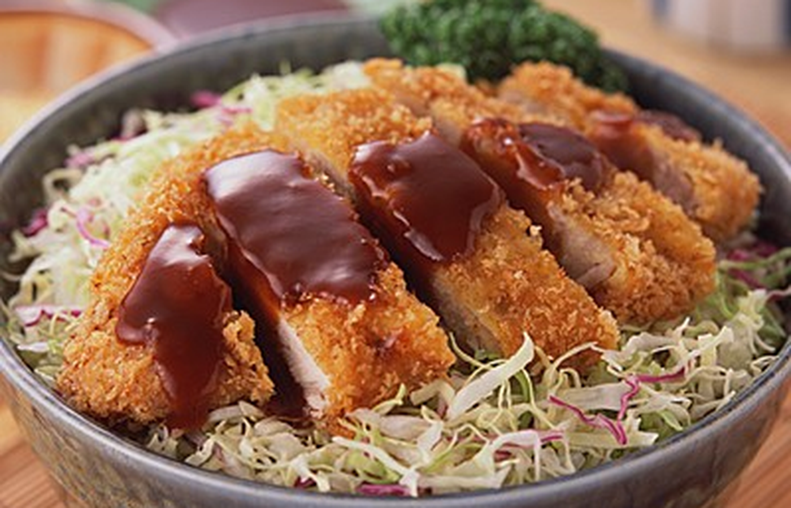
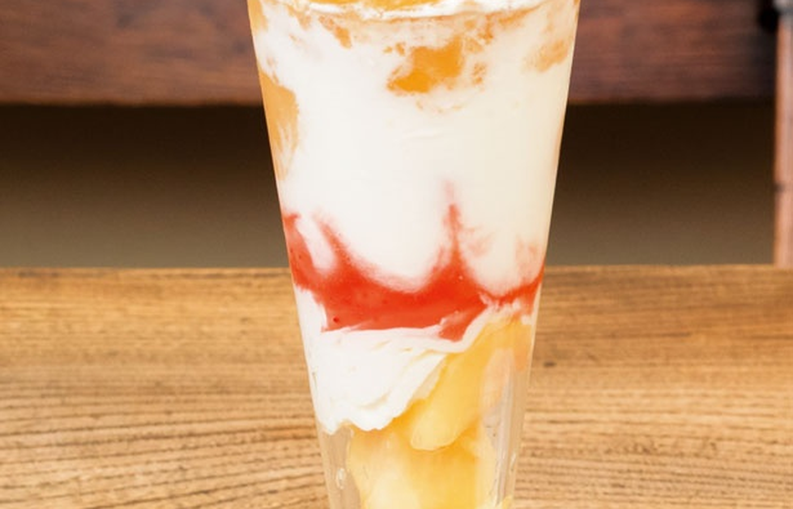

町並み、瀬戸内海、果物。
岡山らしさを幅広く楽しむ旅。
岡山桃太郎空港でレンタカーを受け取り、倉敷美観地区へ。 後楽園や吉備津神社、鷲羽山をめぐり、町並み・庭園・瀬戸内海の景色を楽しみます。 ばら寿司、えびめし、デミカツ丼、桃パフェも各日の行程に組み込みます。
白壁の町並み、瀬戸大橋と多島美、穏やかな海辺。 倉敷・児島・牛窓を巡りながら、ばら寿司、えびめし、デミカツ丼、 果物スイーツを楽しむ2泊3日です。
岡山桃太郎空港でレンタカーを受け取り、倉敷美観地区へ。 後楽園や吉備津神社、鷲羽山をめぐり、町並み・庭園・瀬戸内海の景色を楽しみます。 ばら寿司、えびめし、デミカツ丼、桃パフェも各日の行程に組み込みます。
倉敷の町並み、日本庭園、歴史ある回廊、瀬戸内海の眺望を楽しみます。

白壁の町家と倉敷川、柳並木が続く、岡山を代表する歴史的な町並みです。

広い芝生と池、季節の花木を楽しめる日本三名園のひとつ。園内から岡山城も望めます。

山の斜面に沿って続く長い回廊が印象的な、吉備の歴史を感じる神社です。

瀬戸内海に浮かぶ島々と瀬戸大橋を一望できる、岡山を代表する展望スポットです。
華やかな郷土料理、岡山の洋食、ご当地丼、果物スイーツを味わいます。

魚介や野菜を彩りよく盛り付ける、岡山を代表する華やかな郷土料理です。

黒褐色のソースで炒めたご飯にえびを合わせる、岡山ならではの洋食メニューです。

カツと千切りキャベツにデミグラスソースを合わせる、岡山市の定番グルメです。

岡山産の桃を主役にした、果物王国らしい華やかなデザートです。
4月中旬〜下旬は、倉敷の柳並木や新緑、瀬戸内海の穏やかな景色を楽しみやすい時期です。 日中は過ごしやすくても、鷲羽山や牛窓では海風が強い場合があるため、 薄手の上着を用意します。
倉敷、岡山市、児島をつなぎ、景色とご当地グルメを各日に組み込みます。
岡山桃太郎空港でレンタカーを受け取り、倉敷美観地区へ。倉敷川沿いの町並みや大原美術館周辺を巡り、町家カフェにも立ち寄ります。
岡山後楽園と吉備津神社を訪れ、庭園と歴史ある建築を楽しみます。昼食や夕食には、ばら寿司、えびめし、デミカツ丼から選びます。
児島方面へ移動し、鷲羽山から瀬戸大橋と島々を眺めます。岡山市内へ戻り、桃パフェやお土産を楽しんで空港へ向かいます。
岡山桃太郎空港のターミナルビル1階には、レンタカー各社の総合窓口があります。 倉敷、岡山市、児島、牛窓を組み合わせやすく、2泊3日でも地域の違いを楽しめます。